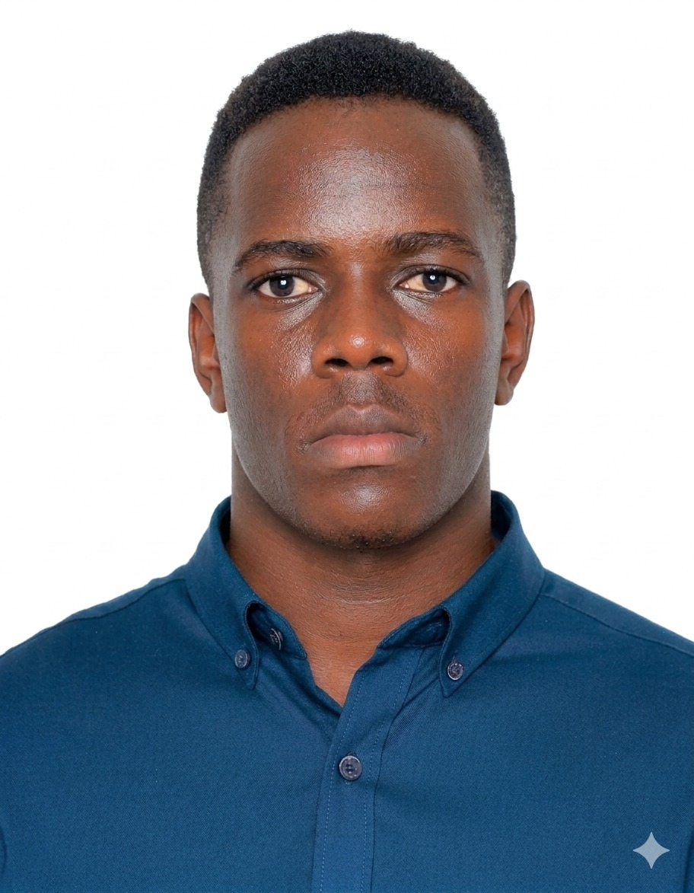

Email: talemwajohnson57@gmail.com
Phone: 0709838465
Location: Kampala,Uganda
I am a hardworking and self-motivated student with an interest in Information Technology and business. I am willing to learn new skills and work with others to achieve common goals.
Bachelor of Information Technology
Ndejje University
2024 to present
Uganda Certificate of Education (UCE)
Kololo Senior Seconadry School
2017 to 2020
Uganda Certificate of Education (UCE)
Prince Joseph Acardemy
2021 to 2023
Data Entrant at Uganda Health Proffissions Assement Board
2023 to date
| EDUCATION | SKILLS | WORK EXPERINCE | HOBBOES |
|---|---|---|---|
|
Bachelor of Information Technology Ndejje Universty 2024 - Present Secondary Education Uganda Certificate of Education (UCE) Kololo Senior Secondary School 2017 to 2020 Uganda Certificate of Education (UCE) Prince Joseph Acardemy 2021 to 2023 |
|
Data Entrant at Uganda Health Proffissions Assement Board 2023 to date |
|
Available upon request.
TALEMWA JOHNSON
Thank you for viewing my CV.
